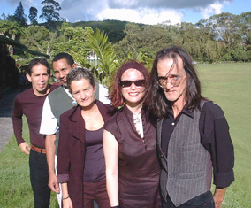

|
| (07/2003
- 03/2004) San Antonio de los Altos, Venezuela Bossas, Boleros, Beatles y Criollas (Arreglos: E. Mendoza y Tinta China) (grabación sin mezcla)  En el descanso de un toque en el Club de Polo, Club de Campo, San Antonio de los Altos Corcovado (A. C. Jobim, arrgl. TC) - Ana María, voz Pajarillo Verde (trad. ven., arrgl. TC) - Eva, voz You've got a friend (C. King, arrgl. TC) - Ana María, voz Bésame Mucho (C. Velázquez, arrgl. TC) - Eva, voz One Note Samba (A. C. Jobim, arrgl. TC) - Ana María y Eva, voces Sabor a Mí (A. Carrillo, arrgl. TC) - Eva, voz Integrantes: Emilio Mendoza Guitarra, Dirección Ike Lizardo Bajo eléctrico Ana María Reverón Voz Eva Uzcátegui Voz Iván Rivas Percusión Richard Díaz Batería Invitados
Especiales: Principales
Presentaciones:
|
|
|
|